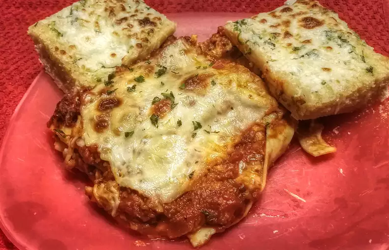

World's Best Lasagna
This lasagna recipe takes a little work, but it is so satisfying and filling that it's worth it!

Is it worth it?
Making lasagna can be time-consuming, but the results are well worth the wait. You'll find a detailed ingredient list and step-by-step instructions in the recipe below, but let's go over the basics:
Ingredients
- Italian sausage and lean ground beef.
- Onion and garlic
- Can of crushed tomatoes, two cans of tomato sauce, and two cans of tomato paste.
- Two tablespoons of white sugar
- Fresh parsley, dried basil leaves, salt, Italian seasoning, fennel seeds, and black pepper.
- Lasagna noodles
- Parmesan, mozzarella, and ricotta cheese make this lasagna extra decadent.
- Egg
How to Make
- Make the meat sauce.
- Cook the noodles.
- Make the ricotta mixture.
- Layer the lasagna
- Cover with foil and bake.
- Let the lasagna rest before serving.
How to layer
- Meat sauce
- Noodles
- Ricotta mixture and mozarella slices
- Meat sauce
- Parmesan cheese
- Repeat the layers, then top with the remaining Parmesan.
The assembled lasagna should take about 50 minutes to cook in an oven preheated to 375 degrees F. Cover it with foil for the first 25 minutes, then let it cook uncovered for the final 25 minutes. Also, it's important to let the lasagna rest at room temperature for about 15 minutes before you cut into it.